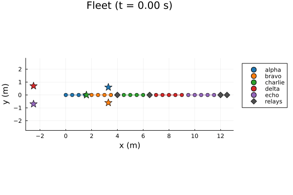

A Four-Level Fleet, Written in the Nested DSL
The other pages in this section nest at most one subsystem inside the root. This one nests two, for four levels of tree – root → wing → flight → escort team → agents – and is written entirely in the NestedDSL language rather than by hand-assembling RefinedSystem and SystemEdge values.
It makes two points, and documents one sharp edge.
Composition. The fleet is not one big literal. Three ordinary Julia functions – escort, relay, and flight – each return a SystemFragment, and the fleet is assembled by calling them. escort is used at two different depths without change, because a fragment's paths are relative to wherever it lands and lowering rewrites them against its final position. The DSL has no looping or conditional constructs; Julia's own do that work, which is the whole design.
What depth costs. Three pushforward steps separate the coarsest sheaf from the raw agents, so the rigidity the hierarchy imposes is far stronger than in a shallow spec. approximation_gap measures what that buys and what it costs.
The sharp edge. centroid means something different on a refined subsystem than it does on a leaf team. The page shows the difference with a measurement rather than a warning.
using CellularSheaves
using CellularSheaves.ControlSheaves.NestedSystems
using CellularSheaves.ControlSheaves.NestedDSL
using CellularSheaves.ControlSheaves.AgentControllers
using LinearAlgebra
using Statistics
using Plots
using Printf
# Located from the package root, not `@__DIR__`: while Literate.jl executes a page, `@__DIR__`
# points at the *output* directory rather than at this file.
include(joinpath(pkgdir(CellularSheaves), "docs", "literate", "nested", "_plot_helpers.jl"))
const D = 4 # SE(3) homogeneous: 3D translation + 1 homogeneous row4Reusable fragments
Each of these is an ordinary Julia function returning a SystemFragment – a value, not a macro and not a template. $(...) marks a computed name; everything else in the block is an ordinary Julia expression evaluated on the spot.
Note that escort declares its own @target as well as the observation that tracks it. Targets are global however deeply the declaring fragment is nested, so an escort team can carry the target it is responsible for along with it. That is what lets one function serve a team three levels down and a team two levels down, with neither call knowing where it will land.
"""
escort(name, m, r, tgt) -> SystemFragment
An `m`-agent rigid escort ring of radius `r`, its own target `tgt`, and the pin tying the two
together.
"""
escort(name::Symbol, m::Int, r::Real, tgt::Symbol) = @nested_system begin
@team $(name) = ring(m; radius=r)
@target $(tgt)
@observe $(name) => $(tgt)
end
"""
relay(name) -> SystemFragment
A single unanchored agent with no target of its own, used to bridge two systems. With exactly one
edge to each of two neighbours and nothing else pulling on it, a relay costs zero energy wherever
it sits and therefore settles exactly at the midpoint of the two -- the same "zero-tension
follower" mechanism `wheel_formation.jl` measures.
"""
relay(name::Symbol) = @nested_system begin
@team $(name) = path(1; radius=0.1)
end
"""
flight(name, elems, bridge) -> SystemFragment
A refined subsystem named `name` holding one `escort` per entry of `elems` (each a
`(name, m, radius, target)` tuple), bridged in a chain through a `relay` named `bridge`.
The `@system name begin … end` block nests a whole fragment inside another, and the `@include`s
splice the escorts' declarations into it. Depth is unbounded: nothing stops a `flight` from
containing another `flight`.
"""
function flight(name::Symbol, elems, bridge::Symbol)
@nested_system begin
@system $(name) begin
for e in elems
@include escort(e[1], e[2], e[3], e[4])
end
@include relay(bridge)
# Chain each escort's centroid through the shared relay. `centroid` is applied only
# to leaf teams here -- see the caveat section below for why that matters.
for e in elems
@link centroid($(e[1])) => $(bridge)
end
end
end
endMain.var"##753".flightThe fleet
The root holds two wings. wingA holds a flight and a directly-attached escort; the flight holds two escorts; each escort holds its agents.
wingB is deliberately shallower than wingA. The result is an irregular tree whose siblings differ in depth, arity, and team size – exactly the case a tower compiler is easiest to get wrong on.
fleet = @nested_system begin
@dim D
@affine true
@system wingA begin
@include flight(:flight1, [(:alpha, 4, 0.6, :t1), (:bravo, 4, 0.6, :t2)], :r1)
@include escort(:charlie, 4, 0.6, :t3)
@include relay(:r2)
# `project(flight1, 1)` descends: flight1's first member is `alpha`, whose own first
# member is its agent 1 -- so this edge lands on a single raw agent at the finest level.
@link project(flight1, 1) => r2
@link r2 => centroid(charlie)
end
@system wingB begin
@include escort(:delta, 5, 0.7, :t4)
@include escort(:echo, 5, 0.7, :t5)
@include relay(:r3)
@link centroid(delta) => r3
@link r3 => centroid(echo)
end
@include relay(:r4)
@link project(wingA, 1) => r4
@link r4 => project(wingB, 1)
end
system = compile_nested_system(fleet)
tower = system.tower
@printf("%d agents, %d targets, tower depth %d\n",
length(tower.agent_vertices), length(system.targets), tower.depth)
for (k, level) in enumerate(tower.levels)
@printf(" H%d: %2d vertices\n", k - 1, length(vertex_stalks(level)))
end26 agents, 5 targets, tower depth 4
H0: 8 vertices
H1: 10 vertices
H2: 14 vertices
H3: 31 vertices
The tower collapses from 31 vertices at the finest level to 8 at the coarsest, one pushforward per level of the tree. Every intermediate level is a genuine sheaf in its own right, and the one harmonic solve solve_hierarchical performs happens on the 8-vertex H₀.
Names, not indices
The compiled system keeps its name tables, so downstream code never has to reconstruct which block of agent indices belongs to which team. That bookkeeping is what agent_index_ranges does by hand on the other pages in this section, and it gets harder to keep in sync the deeper the tree goes.
team_paths = ["wingA.flight1.alpha", "wingA.flight1.bravo", "wingA.charlie",
"wingB.delta", "wingB.echo"]
for p in team_paths
@printf(" %-22s agents %s\n", p, agent_range(system, p))
end
@printf(" %-22s agents %s (the whole subtree)\n", "wingA", agent_range(system, :wingA)) wingA.flight1.alpha agents 1:4
wingA.flight1.bravo agents 5:8
wingA.charlie agents 10:13
wingB.delta agents 15:19
wingB.echo agents 20:24
wingA agents 1:14 (the whole subtree)
Target motion: two wings, two orbiting clusters
wingA's three targets sit on a triangle around one centre, wingB's two on a segment around another. The centres orbit a common origin in opposite directions, so the wings are pulled steadily apart and back together while the relay chain between them stays taut.
const ω, R_orbit, h_alt = 0.35, 2.5, 1.5
wingA_centre(t) = [R_orbit * cos(ω * t), R_orbit * sin(ω * t)]
wingB_centre(t) = [-R_orbit * cos(ω * t), -R_orbit * sin(ω * t)]
offsets = Dict(:t1 => [0.8, 0.6], :t2 => [0.8, -0.6], :t3 => [-0.9, 0.0],
:t4 => [0.0, 0.7], :t5 => [0.0, -0.7])
centre_of(name) = name in (:t1, :t2, :t3) ? wingA_centre : wingB_centre
target_traj(name) = t -> begin
c = centre_of(name)(t)
[c[1] + offsets[name][1], c[2] + offsets[name][2], h_alt, 1.0]
end
# Analytic derivatives of the orbit -- the offsets are constant, so only the centre contributes.
target_vel(name) = t -> begin
s = name in (:t1, :t2, :t3) ? 1.0 : -1.0
[-s * R_orbit * ω * sin(ω * t), s * R_orbit * ω * cos(ω * t), 0.0, 0.0]
end
target_acc(name) = t -> begin
s = name in (:t1, :t2, :t3) ? 1.0 : -1.0
[-s * R_orbit * ω^2 * cos(ω * t), -s * R_orbit * ω^2 * sin(ω * t), 0.0, 0.0]
end
trajectories = Dict(n => target_traj(n) for n in system.targets)
velocities = Dict(n => target_vel(n) for n in system.targets)
accelerations = Dict(n => target_acc(n) for n in system.targets)Dict{Symbol, Main.var"##753".var"#target_acc##0#target_acc##1"{Symbol}} with 5 entries:
:t2 => #target_acc##0
:t3 => #target_acc##0
:t5 => #target_acc##0
:t1 => #target_acc##0
:t4 => #target_acc##0Influence across the tree
The tower is linear in the target positions, so the influence of any target on any team is directly measurable: nudge one target and watch a team's solved centroid move. In a four-level tree the interesting question is how far that influence reaches – does a target in one wing move the escorts in the other, three levels of pushforward away?
"""
response_weights(system, path) -> Dict{Symbol,Float64}
The linear response of the team at `path`'s own centroid to a unit displacement of each target in
turn, holding the others fixed. Sums to `1` in a translation-invariant tower, so these read as
blending weights rather than raw sensitivities.
"""
function response_weights(system::CompiledNestedSystem, path::AbstractString)
base = Dict(n => [0.0, 0.0, h_alt, 1.0] for n in system.targets)
verts = agent_vertices(system, path)
centroid_at(vals) = begin
q = solve_hierarchical(system.tower, target_vector(system, vals))[end]
sum(q[v] for v in verts) / length(verts)
end
c0 = centroid_at(base)
return Dict(n => begin
perturbed = copy(base)
perturbed[n] = base[n] .+ [1.0, 0.0, 0.0, 0.0]
centroid_at(perturbed)[1] - c0[1]
end
for n in system.targets)
end
w_alpha = response_weights(system, "wingA.flight1.alpha")
@printf("alpha's response weights: %s (sum = %.3f)\n",
join([@sprintf("%s=%.3f", n, w_alpha[n]) for n in system.targets], ", "),
sum(values(w_alpha)))alpha's response weights: t1=0.332, t2=0.332, t3=0.204, t4=0.066, t5=0.066 (sum = 1.000)
Three things are worth reading off those weights.
alphasplits its weight evenly withbravo's target,t1andt2both near0.33. The two are tied through the same relayr1and are perfectly symmetric withinflight1, so neither gets to claim its own target.t3, one level further out in the same wing, still carries about0.20.t4andt5are in the other wing, reachable only by climbing to the root and back down. Their weights are small but emphatically not zero.
That last point is the hierarchy doing its job: the relay chain r1 → r2 → r4 → r3 is a real mechanical path, and every level of the tower propagates along it. It is also why a deep specification cannot be reasoned about one team at a time. No team here tracks only its own target, and it is the weights, not the topology diagram, that say by how much.
A sharp edge: centroid on a refined system is not centroid on a team
@link centroid(alpha) => r1 and @link centroid(flight1) => r2 look symmetric. They are not.
materialize_restriction builds a restriction map against a node's direct members, then composes it with the fibre-section basis the pushforward discovered. What those members are makes all the difference:
- For a leaf team, the members are raw agents, whose stalk coordinates are world positions. Averaging them gives the geometric centroid, as expected.
- For a refined system, the members are themselves coarse vertices, whose stalk coordinates are coefficients in whatever basis
fiber_section_basishappened to return. Averaging coefficients from two differently-chosen bases is not the average of the two positions.
In practice, a centroid() chain through several refined levels drags the affine homogeneous coordinate away from 1 – and since these restriction maps represent pure translation only while that row is exactly 1 (see rescaling_formation.jl), the whole fleet quietly rescales.
That is why this page uses project(flight1, 1) and project(wingA, 1) on its refined endpoints, and reserves centroid for leaf teams. project resolves recursively down to a single raw agent, so it lands on H_N with identity maps and is immune to the choice of basis.
The difference is measurable. Translating every target by a common vector must translate every agent by that same vector – it is an exact global section, so a well-posed tower reproduces it exactly:
"""
translation_defect(tower, trajectories, shift) -> Float64
The largest per-agent deviation from exact translation equivariance: solve with every target
displaced by `shift`, and compare against the undisplaced solution shifted by hand.
"""
function translation_defect(system::CompiledNestedSystem, vals::AbstractDict, shift)
q0 = solve_hierarchical(system.tower, target_vector(system, vals))[end]
q1 = solve_hierarchical(system.tower,
target_vector(system, Dict(n => v .+ shift for (n, v) in vals)))[end]
return maximum(norm(q1[v] .- (q0[v] .+ shift)) for v in system.tower.agent_vertices)
end
base_vals = Dict(n => target_traj(n)(0.0) for n in system.targets)
shift = [1.0, -2.0, 0.0, 0.0]
@printf("translation defect (project on refined endpoints): %.2e\n",
translation_defect(system, base_vals, shift))
# The same fleet with `centroid()` on the two refined endpoints instead -- everything else
# identical.
fleet_centroid = @nested_system begin
@dim D
@system wingA begin
@include flight(:flight1, [(:alpha, 4, 0.6, :t1), (:bravo, 4, 0.6, :t2)], :r1)
@include escort(:charlie, 4, 0.6, :t3)
@include relay(:r2)
@link centroid(flight1) => r2
@link r2 => centroid(charlie)
end
@system wingB begin
@include escort(:delta, 5, 0.7, :t4)
@include escort(:echo, 5, 0.7, :t5)
@include relay(:r3)
@link centroid(delta) => r3
@link r3 => centroid(echo)
end
@include relay(:r4)
@link centroid(wingA) => r4
@link r4 => centroid(wingB)
end
system_centroid = compile_nested_system(fleet_centroid)
@printf("translation defect (centroid on refined endpoints): %.2e\n",
translation_defect(system_centroid, base_vals, shift))translation defect (project on refined endpoints): 1.35e-15
translation defect (centroid on refined endpoints): 2.89e+00
The first is at solver tolerance; the second is not, by fifteen orders of magnitude. The two specifications differ by exactly two tokens – which is why this is worth measuring rather than reasoning about, since nothing in the source makes the difference visible.
The cost of four levels of rigidity
gap = approximation_gap(tower, target_vector(system, base_vals))
@printf("hierarchical energy = %.3f, direct energy = %.3f, gap = %.3f (relative %.2f)\n",
gap.hierarchical, gap.direct, gap.gap, gap.relative_gap)hierarchical energy = 14.081, direct energy = 8.412, gap = 5.668 (relative 0.67)
The direct baseline lets every agent move independently, so it satisfies all five target pins at once and pays almost nothing. The hierarchical solve must keep every team rigid and every level of the tree consistent, and pays a substantial gap for it.
That gap is not a defect. It is the price of the guarantee that each escort ring stays in formation – the whole reason to impose a hierarchy. NestedSystems guarantees the gap is never negative, and it is not:
@assert gap.gap >= -1e-8 "hierarchical energy must not beat the unconstrained optimum"Dynamics, declared in a second fragment
The gains do not exist until solve_dare has run, which is ordinary Julia that has to happen after the topology is written. Because a fragment is a value, that is no obstacle: the binding cascade is its own fragment, merged onto the topology. Relays get a softer gain than escorts – they exist purely for structural coordination and should not fight the teams they bridge.
DT, STEPS = 0.05, 200
dyn = QuadrotorDynamics()
Ad, Bd = AgentControllers.discrete_matrices(dyn, DT)
Q_lqr = Matrix(Diagonal([500.0, 500.0, 500.0, 150.0, 150.0, 100.0, 100.0, 100.0, 5.0, 5.0]))
R_lqr = Matrix(Diagonal([0.005, 0.005, 0.005]))
K = AgentControllers.solve_dare(Ad, Bd, 10 * Q_lqr, R_lqr)
K_soft = AgentControllers.solve_dare(Ad, Bd, 2 * Q_lqr, R_lqr)
bound = compile_nested_system(merge(fleet, @nested_system begin
@bind dynamics=dyn K_lqr=K
@bind wingA.flight1.r1 K_lqr=K_soft
@bind wingA.r2 K_lqr=K_soft
@bind wingB.r3 K_lqr=K_soft
@bind r4 K_lqr=K_soft
end))CompiledNestedSystem(26 agents, 5 targets, tower depth 4)Closed-loop simulation
escort_problem takes trajectories keyed by target name, so the positional ordering of spec.targets never has to be tracked by hand.
prob = escort_problem(bound, trajectories; velocities=velocities, accelerations=accelerations,
dt=DT, steps=STEPS)
res = run_nested_escort_simulation(prob; use_feedforward=true)
time_grid = 0:DT:(STEPS*DT)0.0:0.05:10.0Diagnostics
ranges = Dict(p => agent_range(bound, p) for p in team_paths)
radii = Dict("wingA.flight1.alpha" => 0.6, "wingA.flight1.bravo" => 0.6, "wingA.charlie" => 0.6,
"wingB.delta" => 0.7, "wingB.echo" => 0.7)
team_target = Dict("wingA.flight1.alpha" => :t1, "wingA.flight1.bravo" => :t2,
"wingA.charlie" => :t3, "wingB.delta" => :t4, "wingB.echo" => :t5)
form_err = Dict(p => zeros(STEPS) for p in team_paths)
track_err = Dict(p => zeros(STEPS) for p in team_paths)
for step in 1:STEPS
t = time_grid[step]
for p in team_paths
positions = [res.sim_data[step][a][1:3] for a in ranges[p]]
c = sum(positions) / length(positions)
form_err[p][step] = sum(abs(norm(q .- c) - radii[p]) for q in positions) / length(positions)
track_err[p][step] = norm(c[1:2] .- trajectories[team_target[p]](t)[1:2])
end
endPlots
cs = palette(:tab10)
team_color(i) = cs[mod1(i, 10)]
relay_paths = ["wingA.flight1.r1", "wingA.r2", "wingB.r3", "r4"]
relay_ranges = Dict(p => agent_range(bound, p) for p in relay_paths)
all_x = Float64[]; all_y = Float64[]
for step in 1:STEPS, a in 1:length(bound.tower.agent_vertices)
push!(all_x, res.sim_data[step][a][1]); push!(all_y, res.sim_data[step][a][2])
end
const TOPDOWN_XLIM = (minimum(all_x) - 0.5, maximum(all_x) + 0.5)
const TOPDOWN_YLIM = (minimum(all_y) - 0.5, maximum(all_y) + 0.5)
# Panel 1: the whole run at once -- faint per-agent paths, ring outlines at sparse snapshots
# fading from early (faint) to final (solid), and the relay chain drawn at the final snapshot.
function top_down_composite(; n_snapshots::Int=7)
snaps = snapshot_steps(STEPS, n_snapshots)
p = plot(title="Top-Down View (full trajectory)", aspect_ratio=1, xlabel="x (m)",
ylabel="y (m)", xlims=TOPDOWN_XLIM, ylims=TOPDOWN_YLIM, legend=:outertopright)
for (i, path) in enumerate(team_paths)
for a in ranges[path]
plot!(p, [res.sim_data[s][a][1] for s in 1:STEPS],
[res.sim_data[s][a][2] for s in 1:STEPS],
color=team_color(i), alpha=0.1, linewidth=1, label="")
end
for (si, s) in enumerate(snaps)
al = fade_alpha(si, length(snaps))
fx = [res.sim_data[s][a][1] for a in ranges[path]]
fy = [res.sim_data[s][a][2] for a in ranges[path]]
plot!(p, [fx; fx[1]], [fy; fy[1]], color=team_color(i), linestyle=:dash, alpha=al,
label=(s == snaps[end] ? last(split(path, ".")) : ""))
scatter!(p, fx, fy, color=team_color(i), markersize=3, alpha=al, label="")
end
tp = [trajectories[team_target[path]](t) for t in time_grid[1:STEPS]]
plot!(p, [q[1] for q in tp], [q[2] for q in tp], color=team_color(i), linestyle=:dot,
alpha=0.5, label="")
pt = trajectories[team_target[path]](time_grid[STEPS])
scatter!(p, [pt[1]], [pt[2]], marker=:star5, markersize=9, color=team_color(i), label="")
end
for (j, rp) in enumerate(relay_paths)
a = first(relay_ranges[rp])
scatter!(p, [res.sim_data[STEPS][a][1]], [res.sim_data[STEPS][a][2]],
color=:gray30, marker=:diamond, markersize=6,
label=(j == 1 ? "relays" : ""))
end
return p
end
p1 = top_down_composite()
function top_down_frame(step::Int)
p = plot(title=@sprintf("Fleet (t = %.2f s)", time_grid[step]), aspect_ratio=1,
xlabel="x (m)", ylabel="y (m)", xlims=TOPDOWN_XLIM, ylims=TOPDOWN_YLIM,
legend=:outertopright)
for (i, path) in enumerate(team_paths)
fx = [res.sim_data[step][a][1] for a in ranges[path]]
fy = [res.sim_data[step][a][2] for a in ranges[path]]
scatter!(p, fx, fy, color=team_color(i), markersize=4, label=last(split(path, ".")))
plot!(p, [fx; fx[1]], [fy; fy[1]], color=team_color(i), linestyle=:dash, label="")
pt = trajectories[team_target[path]](time_grid[step])
scatter!(p, [pt[1]], [pt[2]], marker=:star5, markersize=8, color=team_color(i), label="")
end
for (j, rp) in enumerate(relay_paths)
a = first(relay_ranges[rp])
scatter!(p, [res.sim_data[step][a][1]], [res.sim_data[step][a][2]],
color=:gray30, marker=:diamond, markersize=6, label=(j == 1 ? "relays" : ""))
end
return p
end
# Panel 2: per-team formation radius error -- does each ring stay rigid four levels down?
p2 = plot(title="Formation Radius Error", xlabel="time (s)", ylabel="error (m)")
for (i, path) in enumerate(team_paths)
plot!(p2, time_grid[1:STEPS], form_err[path], color=team_color(i),
label=last(split(path, ".")), linewidth=2)
end
# Panel 3: per-team centroid tracking error.
p3 = plot(title="Centroid Tracking Error", xlabel="time (s)", ylabel="error (m)")
for (i, path) in enumerate(team_paths)
plot!(p3, time_grid[1:STEPS], track_err[path], color=team_color(i),
label=last(split(path, ".")), linewidth=2)
end
# Panel 4: the hierarchy itself over time -- each team's centroid, each relay, and the relay
# chain that ties the two wings together, at sparse snapshots fading faint-to-solid. The early
# transient is skipped: agents start from the default airstrip layout and that convergence is
# already visible in panels 2 and 3.
p4 = plot(title="Hierarchy Over Time (team centroids and relay chain)", aspect_ratio=1,
xlabel="x (m)", ylabel="y (m)")
topo_snaps = snapshot_steps(STEPS, 8)[3:end]
for (si, s) in enumerate(topo_snaps)
al = fade_alpha(si, length(topo_snaps))
final = s == topo_snaps[end]
for (i, path) in enumerate(team_paths)
c = sum(res.sim_data[s][a][1:2] for a in ranges[path]) / length(ranges[path])
scatter!(p4, [c[1]], [c[2]], color=team_color(i), markersize=(final ? 8 : 4), alpha=al,
label=(final ? last(split(path, ".")) : ""))
end
chain = [res.sim_data[s][first(relay_ranges[rp])][1:2] for rp in relay_paths]
scatter!(p4, [q[1] for q in chain], [q[2] for q in chain], color=:gray30, marker=:diamond,
markersize=(final ? 6 : 3), alpha=al, label=(final ? "relays" : ""))
end
plot(p1, p2, p3, p4, layout=(2, 2), size=(1200, 950),
plot_title="Four-Level Fleet (root → wing → flight → team)")
@printf("Mean steady-state tracking error (last 20%% of run): %.3f m\n",
mean(mean(track_err[p][round(Int, 0.8STEPS):end]) for p in team_paths))
@printf("Mean steady-state formation error (last 20%% of run): %.4f m\n",
mean(mean(form_err[p][round(Int, 0.8STEPS):end]) for p in team_paths))Mean steady-state tracking error (last 20% of run): 1.300 m
Mean steady-state formation error (last 20% of run): 0.1438 m
The rings hold their formation to about 0.14 m against radii of 0.6–0.7 m, a few percent, while their centroids sit some 1.3 m from their own targets. That second number is not a tracking failure: it is the blend the response weights predicted, since no team here tracks only its own target. It is the same trade the shallower pages measure, one level deeper.
Animated view
anim = @animate for step in 1:4:STEPS
top_down_frame(step)
end
gif(anim, "hierarchical_fleet.gif", fps=10)Plots.AnimatedGif("/home/runner/work/CellularSheaves.jl/CellularSheaves.jl/docs/src/generated/nested/hierarchical_fleet.gif")
println("Four-level fleet example complete.")Four-level fleet example complete.